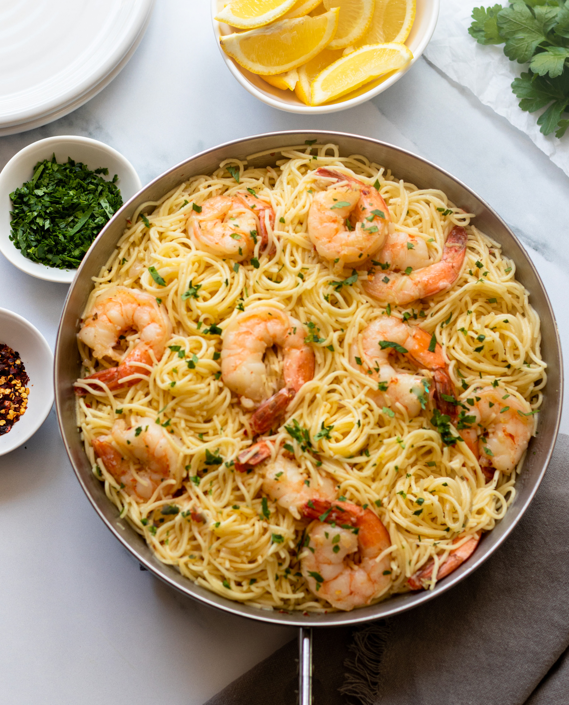

Shrimp Scampi with Pasta
Description
Shrimp scampi with linguine is the ultimate seafood pasta dish. Works with any pasta; angel hair is less filling.
Ingredients:
- 1 (16 ounce) package linguine pasta
- 2 tablespoons butter
- 2 tablespoons extra-virgin olive oil
- 2 shallots, finely diced
- 2 cloves garlic, minced
- 1 pinch red pepper flakes (Optional)
- 1 pound shrimp, peeled and deveined
- 1 pinch kosher salt and freshly ground pepper
- ½ cup dry white wine
- 1 lemon, juiced
- 2 tablespoons butter
- 2 tablespoons extra-virgin olive oil
- ¼ cup finely chopped fresh parsley leaves
- 1 teaspoon extra-virgin olive oil, or to taste
Steps:
- Gather Ingredients
- Bring a large pot of salted water to a boil; cook linguine in boiling water until nearly tender, 6 to 8 minutes. Drain.
- Melt 2 tablespoons butter with 2 tablespoons olive oil in a large skillet over medium heat.
- Cook and stir shallots, garlic, and red pepper flakes in the hot butter and oil until shallots are translucent, 3 to 4 minutes.
- Season shrimp with kosher salt and black pepper; add to the skillet and cook until pink, stirring occasionally, 2 to 3 minutes. Remove shrimp from skillet and keep warm.
- Pour white wine and lemon juice into skillet and bring to a boil while scraping the browned bits of food off of the bottom of the skillet with a wooden spoon.
- Melt 2 tablespoons butter in skillet, stir 2 tablespoons olive oil into butter mixture, and bring to a simmer.
- Toss linguine, shrimp, and parsley in the butter mixture until coated; season with salt and black pepper. Drizzle with 1 teaspoon olive oil to serve.
- Serve hot and enjoy!